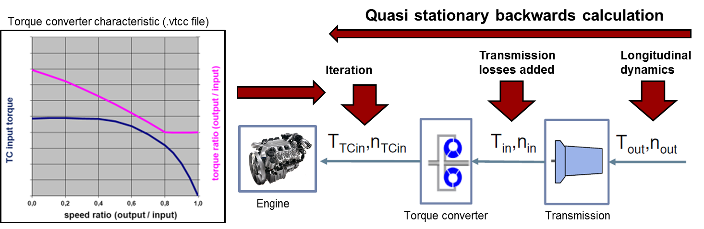
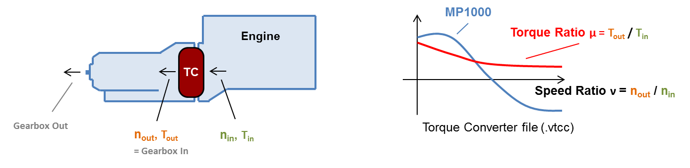
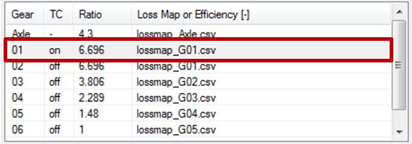
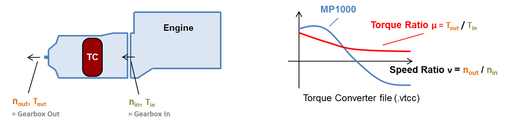
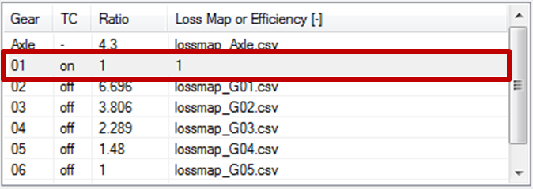

!!! The Torque Converter Model is still in development !!!The torque converter is
defined as (virtual) separate gear.
While TC active: Iterative calculation of engine torque and speed based
on TC characteristic.
Creeping: Engine speed set to idling. Brakes engaged to absorb surplus
torque.

Torque converter characteristics file (.vtcc)
The file is described
here.
Setup for Conventional AT gearboxes
Torque converter file is defined for
torque converter only
- Define TC gear with ratio of first (mechanical) gear
- Set transmission losses of first gear (map or constant efficiency)

Setup for Power-distributed AT gearboxes
Torque converter file is defined for the
whole gearbox
- Define TC gear with ratio = 1
- Set transmission efficiency to 1 (= 100%) because losses are covered by the .vtcc file.
